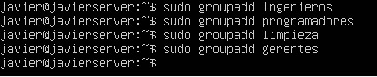

Descargamos el ISO de Ubuntu Server.
Damos enter en la opcion "Instalar Ubuntu Server".
Ya en el instalador seleccionamos el idioma en el cual se instalara.
Configuramos el usuario de Ubuntu Server.
Seleccionamos los componentes que se instalaran en nuestro sistema "Ubuntu Server".
Esperamos a que se instale "Ubuntu Server".
Al finalizar la instalacion, reiniciamos el sistema.
Quitamos el medio de "donde" se instalo Ubuntu Server.
Esperamos a que se inicien todas las funciones de nuestro sistema.
Creamos un usuario con el comando:
sudo adduser nombre_usuario
Mostramos los usuarios creados con el comando:
cat /etc/passwd

Creamos los grupos con el comando:
sudo groupadd nombre_grupo
Mostramos los grupos creados con el comando:
cat /etc/group
Ahora agregamos usuarios a los grupos existentes con el comando:
sudo usermod -a -G nombre_grupo nombre_usuario
Mostramos los usuarios que existen en cada grupo con el comando:
getent group nombre_grupo